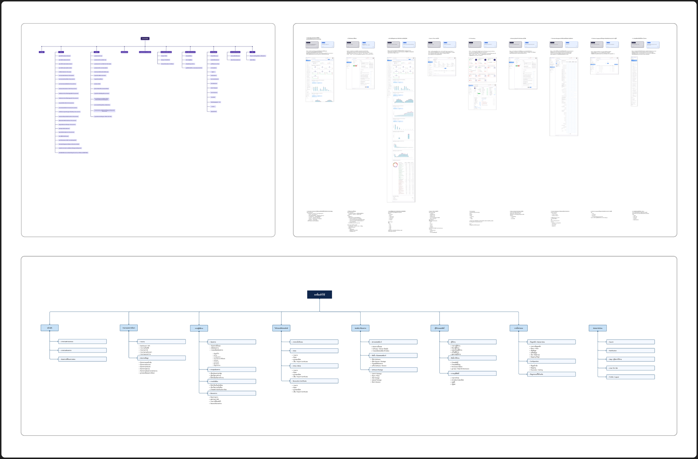
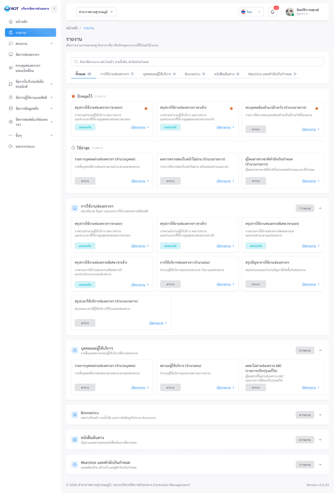
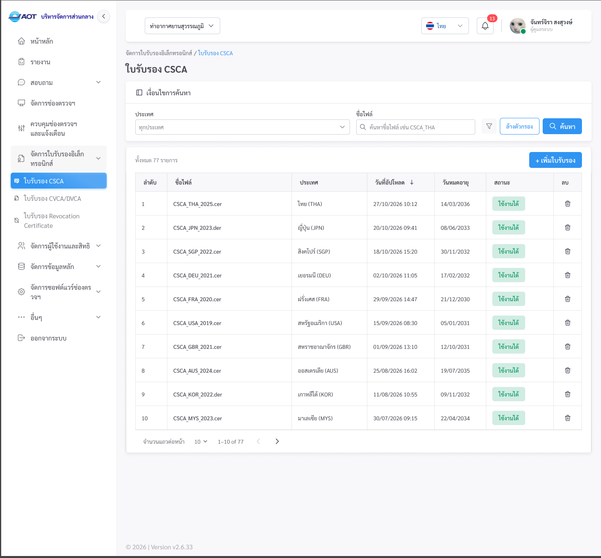

Device faults
Printer out of paper, gate offline, certificate expiring.
Passenger incidents
Someone stuck in a gate, a bag left behind, someone climbing the barrier.
Security
A watch-list match that needs action now.
Revamp of the back-office tool Suvarnabhumi Airport staff use to monitor automated passport gates.

Each screen is tied to a role and a user story, which showed which pages nobody needed and which actions needed review.


Sarabun for Thai/English UI, IBM Plex Mono for IDs, counts and timestamps.
Success, warning, error and info scales. A status colour means the same thing on every page.
4 / 8 / 12 columns, 320px to 1440px+.
Gate, Equipment, Upload, Notification, Timeline, Stepper, Table, Chart.



